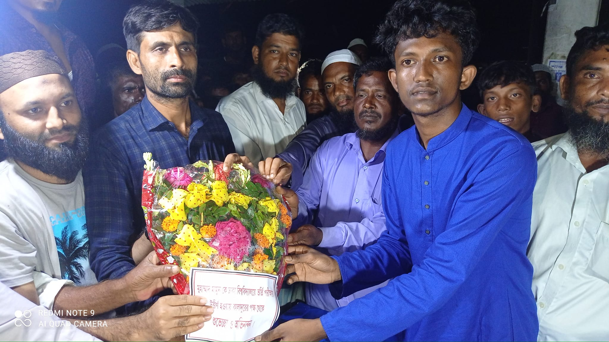

An unexpected reception that made me proud as well as surprised.
আমি ঢাবিতে চান্স পাওয়ায় যতটা খুশি হয়েছিলাম তার চেয়ে বেশি মন খারাপ হয়েছিল আমার কাছের বন্ধু Miraj ও সম্রাট চান্স না পাওয়াতে। আমার রেজাল্টে আমার চেয়ে সবচেয়ে বেশি খুশি হয়েছিল আমার আব্বু-আম্মু, বন্ধু-বান্ধব, বড় ভাই-ছোট ভাই সহ আমার এলাকার মানুষরা। এই ব্যাপারটাই আমার কাছে সবচেয়ে বেশি ভালো লেগেছে।
আজকের গল্পট বলা যাক...
গতকাল ঈদের দিন আমি আমার এলাকার বন্ধু-বান্ধব,ছোট-বড় ভাইদের সাথে আড্ডা দিয়েছিলাম। গতকালই তারা গোপনে সংবর্ধনা অনুষ্ঠানের পরিকল্পনা করেছিল তার কিছুই আমি জানতাম না। আজকে গিয়েছিলাম ভুমিহীন বাজার (যেখানে আমি স্কুল জীবন শেষ করেছি)। সেখানে আমার বেশিরভাগ বন্ধুরা। সেখান থেকে এসেই দেখি সংবর্ধনা অনুষ্ঠানের আয়োজন। যেটা আমার জন্য ছিল পুরাই সারপ্রাইজড। যারা আয়োজন করেছিল আমার বড় ভাই,ছোট ভাই এবং বন্ধু-বান্ধবরা মিলে। আমার ছোট একটা অর্জনের তুলনায় এটা ছিল আমার জন্য অনেক বড় কিছু। আমার মতে এটা শুধু আমাকে সম্মানিত করা হয়নি সাথে অনুপ্রেরণা হয়ে থাকবে আমাদের অনুজদের জন্য। সবশেষে যারা আয়োজন করছে তাদের প্রতি আমি অনেক কৃতজ্ঞ। সামনে যারা আমাদের এলাকা থেকে ভালো করবে তাদের জন্যও আপনারা সহ আরো বড় সম্মাননা দিয়ে থাকবো। আমার ভবিষ্যতের জন্য সবাই দোয়া করবেন।
see more picture